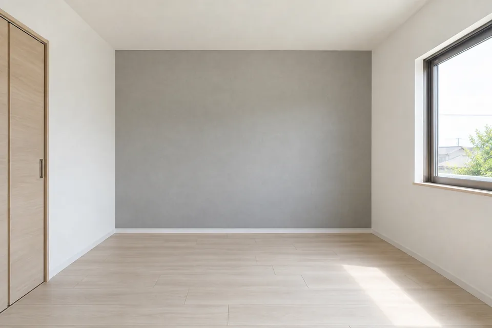
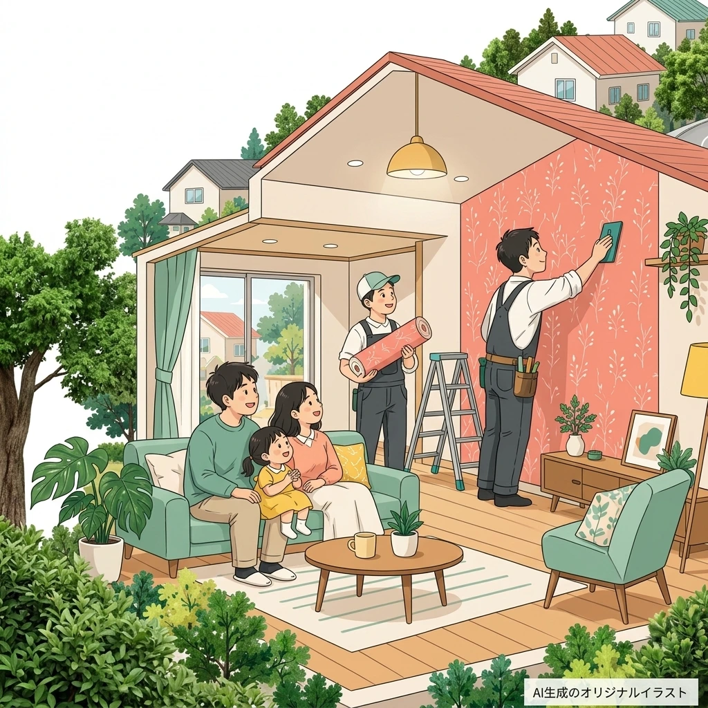
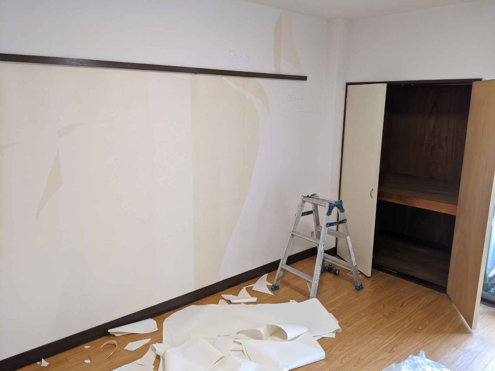
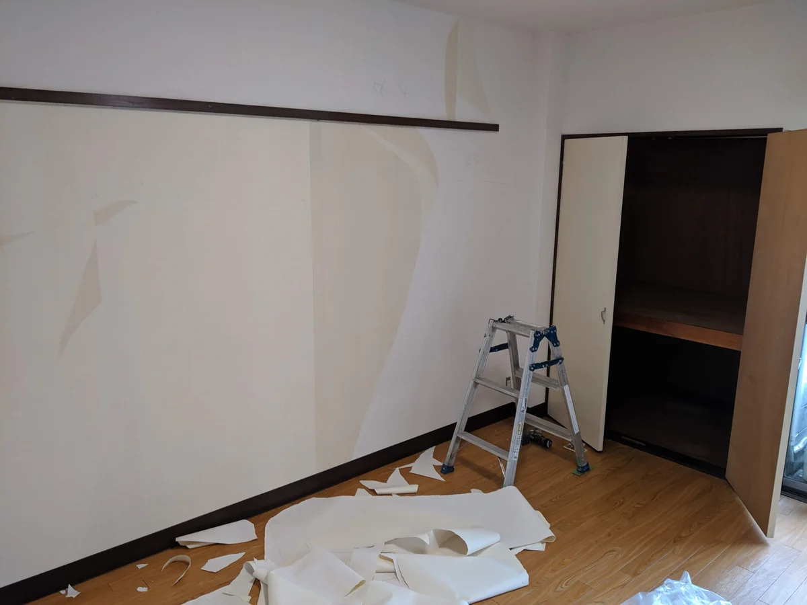
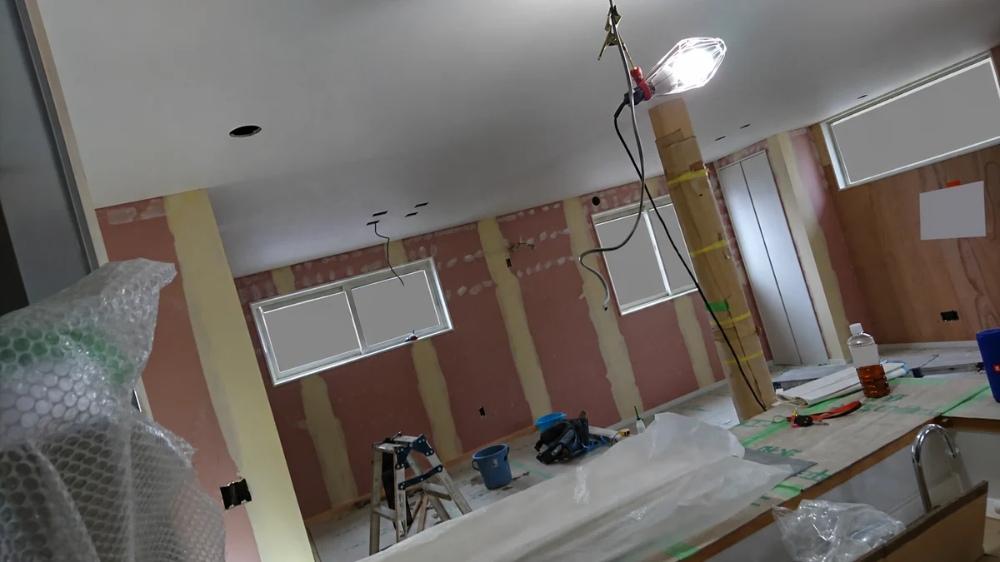
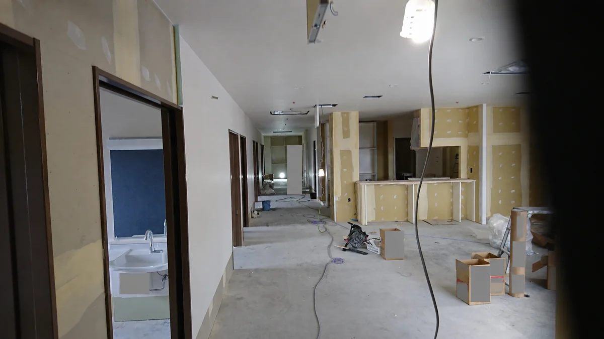
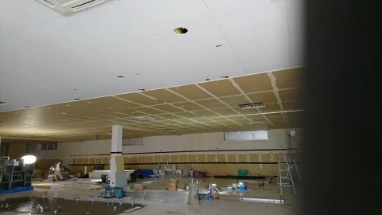
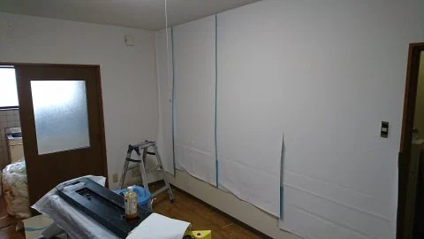
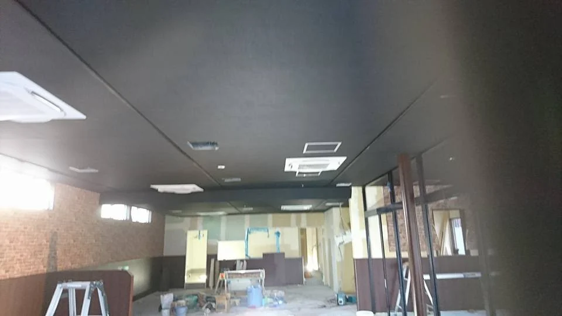

メインサービス
壁紙（クロス）貼り替え
汚れ・日焼け・傷・めくれが気になる壁を、新しいクロスへ。一部屋だけ、トイレだけ、玄関だけ、一面のアクセントクロスもご相談ください。
一部屋からトイレ・洗面所アクセントクロス
壁紙貼り替えを詳しく
クロス選びの注意点を解説 ＊
下地とはクロスをめくった状態のことをいいます
壁紙の汚れやめくれ。床の傷み。
毎日気になる場所を、職人に直接相談してみませんか。
ネットインテリア月島は、石川県・福井県の内装工事を承る職人直営店。クロス貼り替えをメインに、必要な箇所を必要な範囲で整える工事を大切にしています。
内装工事35年。ゼネコン等の現場・ホテルでの施工経験を、住まいの内装工事にも。
さまざまな現場で培った経験を活かし、一部屋のクロス貼り替えや小さな補修にも対応します。
少人数運営で広告費や固定費を抑え、施工に必要な部分へコストを集中。営業会社や大きな中間業者を介さず、ご相談から施工まで職人が直接対応します。

こんなお悩みありませんか
サービス紹介
個人のお客様、賃貸物件のオーナー様、小規模事業者様。必要な内装工事をまとめて相談できます。

メインサービス
汚れ・日焼け・傷・めくれが気になる壁を、新しいクロスへ。一部屋だけ、トイレだけ、玄関だけ、一面のアクセントクロスもご相談ください。
選ばれる理由
ゼネコン等の現場やホテルの工事で培った経験を、住宅や小規模店舗の内装工事に活かします。職人直営で直接対応し、無駄な中間マージンを抑えやすい体制です。
広告費・固定費・人件費を抑えた運営で、必要な材料と施工にコストを集中させます。
クロス貼り替えをメイン業務に。一部屋だけ、一面だけなど、ご希望の範囲からご相談いただけます。
CF、フロアタイル、窓まわり、部分補修。大規模リフォームでなくても気軽にご相談ください。
地域の住まいと小さな店舗の内装工事を。施工場所やご希望に合わせて対応を確認します。
思いついたときに、ご希望をまとめてLINEで。内容確認後に写真をお送りいただくこともできます。
施工事例・施工風景
壁紙の撤去や下地処理、内装工事の途中の様子をご紹介します。こちらは実際の現場写真です。完成写真や同一物件のBefore／Afterではありません。

古い壁紙を剥がしている途中の施工風景です。

壁の下地処理や、室内の養生が見える施工風景です。
写真の一部を非表示にしています。
複数の壁面や廊下まわりを施工している現場の様子です。
写真の一部を非表示にしています。
天井や壁面の下地が見える、内装工事途中の写真です。

壁面と作業道具のある、施工中の室内の様子です。

天井や壁、開口部まわりが見える内装工事の現場です。
施工の流れ
施工希望地域と工事内容をお知らせください。
ご希望や気になる箇所をLINEで確認します。
施工範囲・下地・設置条件を確認します。
工事内容と費用をご確認いただきます。
ご都合と施工条件を確認して日程を決めます。
職人が施工内容に沿って丁寧に作業します。
仕上がりをご確認いただき、工事完了です。
対応エリア
暮らしの近くで、内装の相談を。
地域に根ざした職人直営の内装工事店です。
施工場所や工事内容により、対応の可否・日程を確認してご案内します。
県内の施工場所・工事内容をLINEでお知らせください。
県内の施工場所・工事内容をLINEでお知らせください。
よくある質問
はい。クロス1部屋、床の一部分、窓まわりの交換、住宅の部分補修など、小さな工事もご相談ください。施工場所とご希望をLINEでお知らせください。
はい。一部屋だけの壁紙（クロス）貼り替えや、一面だけのアクセントクロスにも対応しています。範囲や下地の状態を確認してご提案します。
はい。施工希望地域、工事内容、気になる箇所などをLINEでお知らせください。内容を確認し、必要に応じて現地確認を行ったうえでお見積もりをご案内します。料金や施工条件はお見積もりでご確認いただけます。
お問い合わせの受付はLINEのみです。電話窓口は設けていません。ご相談内容をLINEでお送りください。
石川県・福井県対応。職人がご希望を伺います。
施工希望箇所の写真は、LINEのトークでお送りいただけます。

スマホでQRコードを読み取ってください